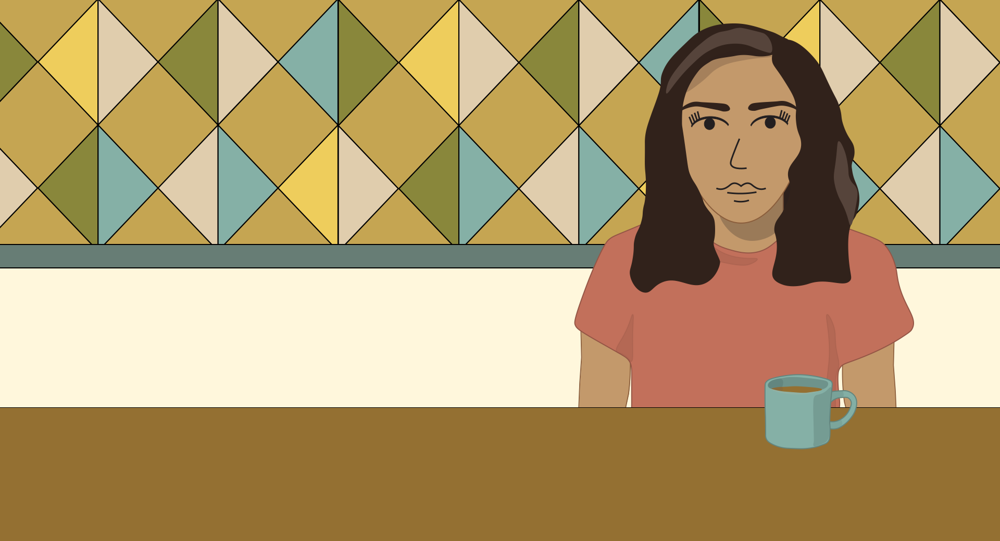
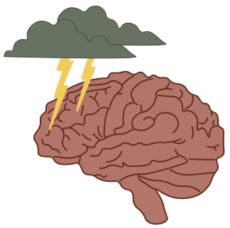
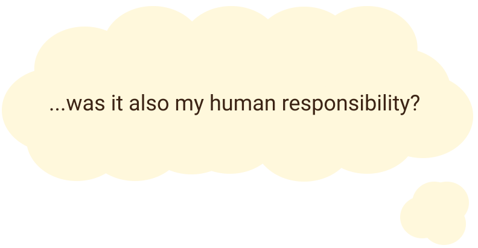
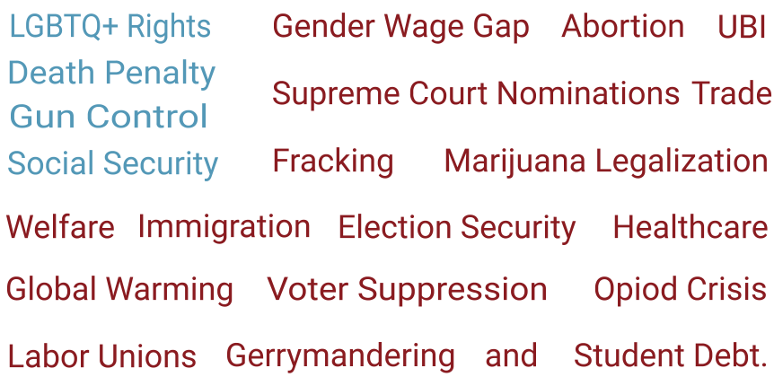
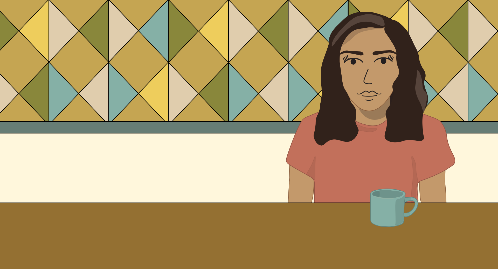
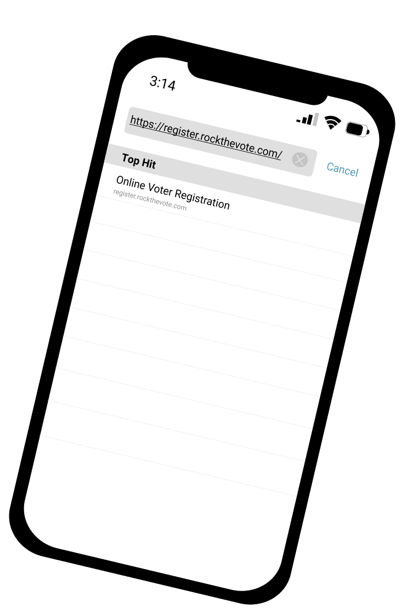

A Nonvoter Journey

I used to not vote.
I've always felt like politics didn't affect me so why did I need to be concerned?
And it's not like my one little vote even mattered.
Life was already crazy enough.

I thought I was never going to vote, but then someone changed that.
*chat chat chat*
*politics*
*uncomfortable*
I early voted because I was scared I might get injured on election day and miss it.
...Why? Why is it that important to you?
Because it's my human responsibility to do the best I can for the people in this country and the world.

I knew that I cared about people, but I didn't realize that voting was part of doing the best I can for them.

A single election impacts so many issues like:
Each impacting someone in ways I didn’t realize...
...even impacting me in ways I didn’t realize.
My bubble had to burst because it couldn’t exist while knowing that my inaction was hurting myself and the people I thought I cared about.
Honestly, this revelation didn’t happen after one conversation. It took me a while to get used to politics and it’s new existence in my life.
but eventually, I registered online
And then I voted.
Early.
It felt good to be a part of my community and this democracy.

